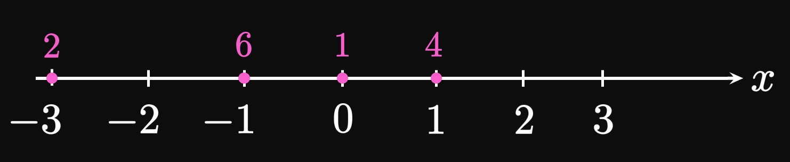
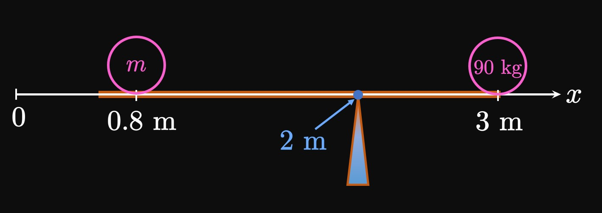
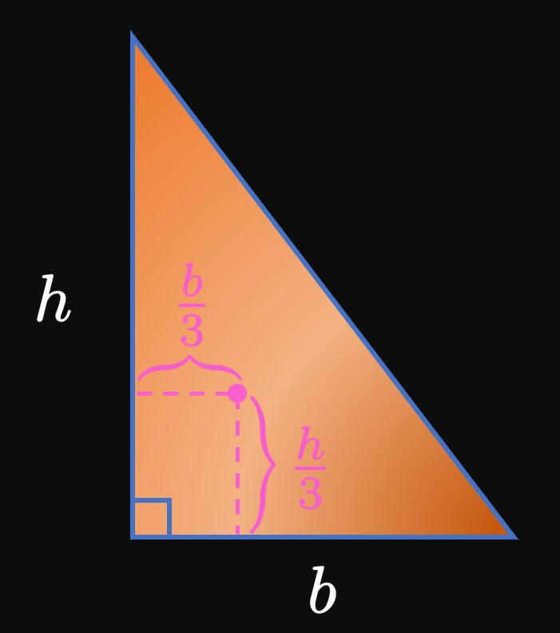
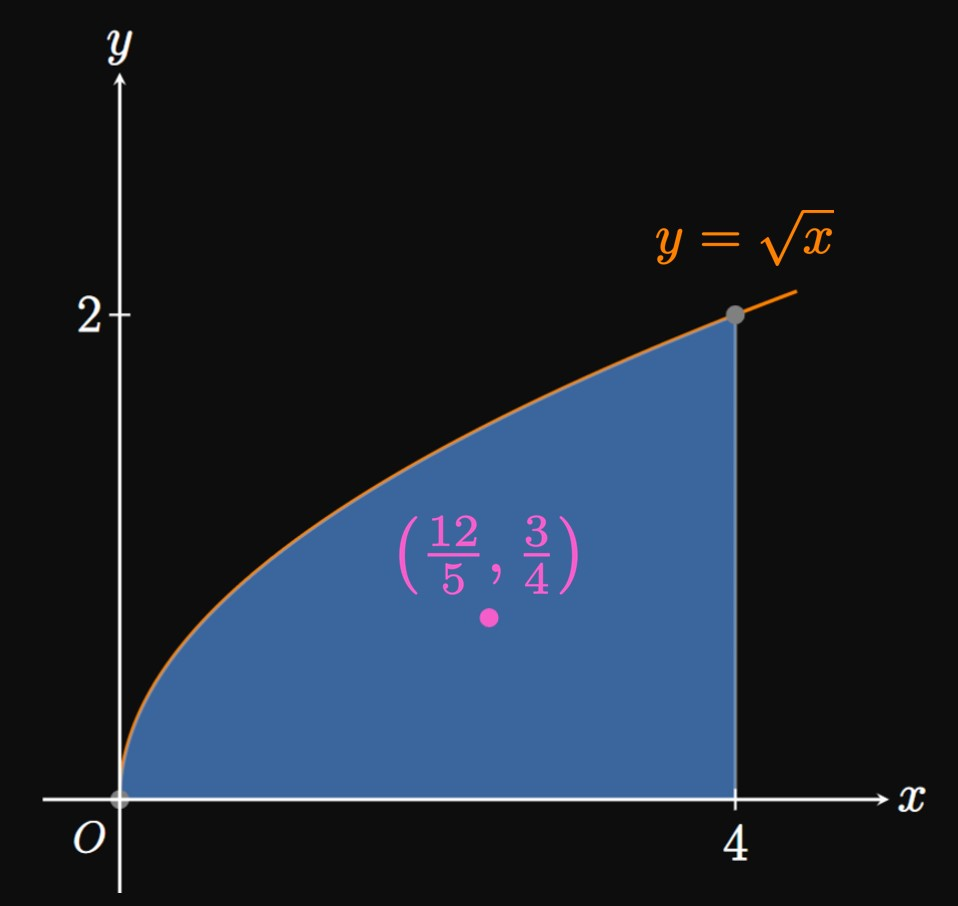
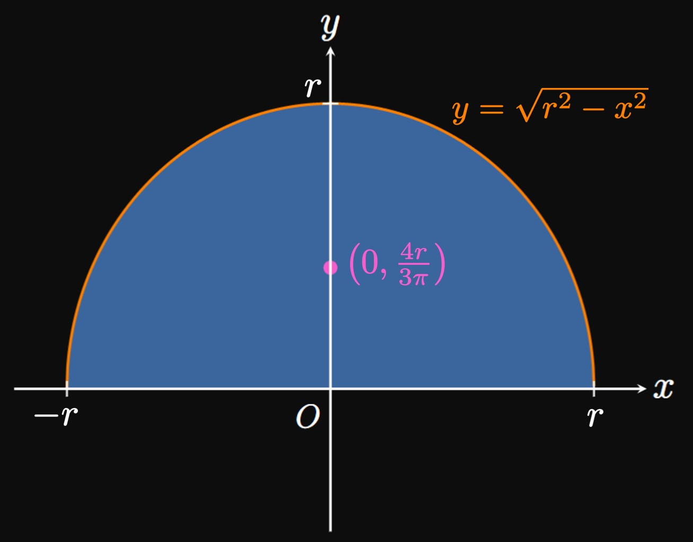

7.4 Exercise Solutions: Moments and Centers of Mass
EXERCISE 1
What is the moment of a point mass?
What is the center of mass for a system of point masses?
SOLUTION
A moment measures tendency for rotation.
For a particle of mass \(m\) located a distance \(x\)
away from some reference point (usually the origin),
the moment is \(mx.\)
Heavier objects produce larger moments, just as objects far from the reference point do.
The center of mass is given by
\[
\overline x = \frac{\ds \sum_{i = 1}^n m_i x_i}{\ds \sum_{i = 1}^n m_i} \cma
\]
that is, the moment of the system divided by the system's total mass.
All \(n\) particles produce a combined moment equivalent to the moment of a single particle of mass \(\sum_{i = 1}^n m_i\)
located at \(x = \overline x.\)
EXERCISE 2
What is a lamina?
What is a centroid,
and how do we find one?
SOLUTION
A lamina is a flat plate,
whose shape we model using graphs in the \(xy\)-plane.
The center of mass of a lamina is called the centroid;
it is the point at which the lamina balances.
If a lamina is the region bounded by the curve \(y = f(x)\) and the \(x\)-axis from \(x = a\) to \(x = b,\)
then the centroid is located at
\begin{equation*}
\overline x = \frac{1}{A} \int_a^b x f(x) \di x
\lspace
\overline y = \frac{1}{A} \int_a^b \tfrac{1}{2} [f(x)]^2 \di x \cma
\end{equation*}
where \(A\) is the lamina's area.
If the lamina is bounded by two curves \(y = f(x)\) and \(y = g(x)\)
from \(x = a\) to \(x = b,\) with \(f(x) \geq g(x)\) on \(a \leq x \leq b,\)
then the centroid is at
\begin{equation*}
\overline x = \frac{1}{A} \int_a^b x [f(x) - g(x)] \di x
\lspace
\overline y = \frac{1}{A} \int_a^b \tfrac{1}{2} \par{[f(x)]^2 - [g(x)]^2} \di x \pd
\end{equation*}
EXERCISE 3
Point masses with the specified masses lie on the \(x\)-axis in
Figure 15.
Calculate the moment \(M\) and center of mass \(\overline x\) of the system of particles.

SOLUTION
Each particle's moment is given by the sum \(m_i x_i.\)
So the moment of the entire system of particles is
\[
\ba
M &= \sum_{i = 1}^4 m_i x_i \nl
&= (2 \cdot -3) + (6 \cdot -1) + (1 \cdot 0) + (4 \cdot 1) \nl
&= -8 \pd
\ea
\]
Also, the mass of the entire system is
\[
\ba
m &= \sum_{i = 1}^4 m_i \nl
&= 2 + 6 + 1 + 4 \nl
&= 13 \pd
\ea
\]
So the center of mass is \(x = \overline x\) where
\[
\ba
\overline x &= \frac{M}{m} = \boxed{-\frac{8}{13}}
\ea
\]
EXERCISE 4
The following table shows objects with masses \(m_i\) resting on the \(x\)-axis at the given positions \(x_i.\)
Find the moment \(M\) and center of mass \(\overline x\) of the system of particles.
\(x_i\)
\(m_i\)
\(3\)
\(11\)
\(-7\)
\(9\)
\(1\)
\(5\)
\(-6\)
\(2\)
SOLUTION
The moment of each particle is \(m_i x_i.\)
The entire system's moment is
\[
\ba
M &= \sum_{i = 1}^4 m_i x_i \nl
&= (11 \cdot 3) + (9 \cdot -7) + (5 \cdot 1) + (2 \cdot -6) \nl
&= -37 \pd
\ea
\]
Also, the system's mass is
\[m = \sum_{i = 1}^4 m_i = 11 + 9 + 5 + 2 = 27 \pd\]
The center of mass is therefore \(x = \overline x\) where
\[
\ba
\overline x &= \frac{M}{m} = \boxed{-\frac{37}{27}}
\ea
\]
EXERCISE 5
On the \(y\)-axis, objects with masses \(m_i\) rest at the positions \(y_i\) as given by the following table.
Find the moment \(M\) and center of mass \(\overline y\) of the system of particles.
\(y_i\)
\(m_i\)
\(1\)
\(3\)
\(3\)
\(0\)
\(-4\)
\(7\)
\(9\)
\(12\)
SOLUTION
The moment of each particle is \(m_i y_i.\)
The entire system's moment is
\[
\ba
M &= \sum_{i = 1}^4 m_i y_i \nl
&= (3 \cdot 1) + (0 \cdot 3) + (7 \cdot -4) + (12 \cdot 9) \nl
&= 83 \pd
\ea
\]
Also, the system's mass is
\[m = \sum_{i = 1}^4 m_i = 3 + 0 + 7 + 12 = 22 \pd\]
The center of mass is therefore \(y = \overline y\) where
\[
\ba
\overline y &= \frac{M}{m} = \boxed{\frac{83}{22}}
\ea
\]
EXERCISE 6
An object of unknown mass \(m\) is placed at \(x = 0.8\) meter,
and a \(90\)-kilogram object is placed at \(x = 3\) meters.
They both sit on a balanced plank that pivots at \(x = 2\) meters.
(See Figure 16.)
Calculate \(m.\)

SOLUTION
At the pivot point, the two masses must exert equal and opposite moments.
This fact is summarized by the Law of the Lever,
which gives
\[
\ba
m(2 - 0.8) &= 90(3 - 2) \nl
1.2 m &= 90 \nl
\implies m &= \boxed{75 \un{kg}}
\ea
\]
EXERCISE 7
For
find the
moment about the \(x\)-axis, moment about the \(y\)-axis,
and center of mass of the two-dimensional system of particles.
SOLUTION
The moment about the \(x\)-axis is
\[
\ba
M_x &= \sum_{i = 1}^4 m_i y_i \nl
&= (7 \cdot 3) + (4 \cdot -2) + (2 \cdot 2) + (1 \cdot -3) \nl
&= 14 \pd
\ea
\]
Likewise, the moment about the \(y\)-axis is
\[
\ba
M_y &= \sum_{i = 1}^4 m_i x_i \nl
&= (7 \cdot 4) + (4 \cdot 2) + (2 \cdot -3) + (1 \cdot -4) \nl
&= 26 \pd
\ea
\]
The system's total mass is
\[m = \sum_{i = 1}^4 m_i = 7 + 4 + 2 + 1 = 14 \pd\]
Hence, the coordinates of the center of mass are
\[
\baat{2}
\overline x &= \frac{M_y}{m} &&= \frac{26}{14} = \frac{13}{7} \cma \nl
\overline y &= \frac{M_x}{m} &&= \frac{14}{14} = 1 \pd
\eaat
\]
So \(\boxed{\par{\tfrac{13}{7}, 1}}\) is the center of mass.
EXERCISE 8
For
find the
moment about the \(x\)-axis, moment about the \(y\)-axis,
and center of mass of the two-dimensional system of particles.
SOLUTION
The moment about the \(x\)-axis is
\[
\ba
M_x &= \sum_{i = 1}^3 m_i y_i \nl
&= (3 \cdot 3) + (9 \cdot 2) + (1 \cdot 0) \nl
&= 27 \pd
\ea
\]
Likewise, the moment about the \(y\)-axis is
\[
\ba
M_y &= \sum_{i = 1}^3 m_i x_i \nl
&= (3 \cdot -2) + (9 \cdot 2) + (1 \cdot -1) \nl
&= 11 \pd
\ea
\]
The system's total mass is
\[m = \sum_{i = 1}^3 m_i = 3 + 9 + 1 = 13 \pd\]
Hence, the coordinates of the center of mass are
\[
\baat{2}
\overline x &= \frac{M_y}{m} &&= \frac{11}{13} \cma \nl
\overline y &= \frac{M_x}{m} &&= \frac{27}{13} \pd
\eaat
\]
So \(\boxed{\par{\tfrac{11}{13}, \tfrac{27}{13}}}\) is the center of mass.
EXERCISE 9
For
find the
moment about the \(x\)-axis, moment about the \(y\)-axis,
and center of mass of the two-dimensional system of particles.
SOLUTION
The moment about the \(x\)-axis is
\[
\ba
M_x &= \sum_{i = 1}^4 m_i y_i \nl
&= (8 \cdot 3) + (5 \cdot 3) + (12 \cdot 0) + (6 \cdot -2) \nl
&= 27 \pd
\ea
\]
Likewise, the moment about the \(y\)-axis is
\[
\ba
M_y &= \sum_{i = 1}^4 m_i x_i \nl
&= (8 \cdot 0) + (5 \cdot -3) + (12 \cdot 0) + (6 \cdot -3) \nl
&= -33 \pd
\ea
\]
The system's total mass is
\[m = \sum_{i = 1}^4 m_i = 8 + 5 + 12 + 6 = 31 \pd\]
Hence, the coordinates of the center of mass are
\[
\baat{2}
\overline x &= \frac{M_y}{m} &&= \frac{-33}{31} \cma \nl
\overline y &= \frac{M_x}{m} &&= \frac{27}{31} \pd
\eaat
\]
So \(\boxed{\par{-\tfrac{33}{31}, \tfrac{27}{31}}}\) is the center of mass.
EXERCISE 10
For
\(\ds y = 4x \cmaa y = 0 \cmaa x = 1 \cmaa x = 5\)
find the centroid of the region bounded by the given graphs.
SOLUTION
The area of the region is
\[
\ba
A &= \int_1^5 4x \di x \nl
&= 2x^2 \intEval_1^5
= 48 \pd
\ea
\]
The \(x\)-coordinate of the centroid is therefore
\[
\ba
\overline x &= \frac{1}{A} \int_1^5 x (4x) \di x \nl
&= \tfrac{1}{48} \int_1^5 4x^2 \di x \nl
&= \tfrac{1}{12} \int_1^5 x^2 \di x \nl
&= \tfrac{1}{36} x^3 \intEval_1^5 \nl
&= \tfrac{124}{36} = \tfrac{31}{9} \pd
\ea
\]
We attain the \(y\)-coordinate of the centroid as follows:
\[
\ba
\overline x &= \frac{1}{A} \int_1^5 \tfrac{1}{2} (4x)^2 \di x \nl
&= \tfrac{1}{48} \int_1^5 8x^2 \di x \nl
&= \tfrac{1}{6} \int_1^5 x^2 \di x \nl
&= \tfrac{1}{18} x^3 \intEval_1^5
= \tfrac{62}{9} \pd
\ea
\]
So \(\boxed{\par{\tfrac{31}{9}, \tfrac{62}{9}}}\) is the region's centroid.
EXERCISE 11
For
\(\ds y = 9 - x^2 \cmaa y = 0\)
find the centroid of the region bounded by the given graphs.
SOLUTION
The parabola \(y = 9 - x^2\) intersects the \(y\)-axis (the line \(x = 0\))
when \(x = -3\) and \(x = 3.\)
The region's area is therefore
\[
\ba
A &= \int_{-3}^3 \par{9 - x^2} \di x \nl
&= 2 \int_0^3 \par{9 - x^2} \di x \nl
&= 2 \par{9x - \tfrac{1}{3} x^3} \intEval_0^3 \nl
&= 36 \pd
\ea
\]
By symmetry, the \(x\)-coordinate of the centroid is \(\overline x = 0.\)
(The region must balance at some point on the \(y\)-axis.)
We attain the \(y\)-coordinate of the centroid as follows:
\[
\ba
\overline y &= \frac{1}{A} \int_{-3}^3 \tfrac{1}{2} \par{9 - x^2}^2 \di x \nl
&= \tfrac{1}{72} \int_{-3}^3 \par{9 - x^2}^2 \di x \nl
&= \tfrac{1}{36} \int_0^3 \par{9 - x^2}^2 \di x \nl
&= \tfrac{1}{36} \int_0^3 \par{x^4 - 18 x^2 + 81} \di x \nl
&= \tfrac{1}{36} \par{\tfrac{1}{5} x^5 - 6x^3 + 81x} \intEval_0^3 \nl
&= \tfrac{18}{5} \pd
\ea
\]
Thus, \(\boxed{\par{0, \tfrac{18}{5}}}\) is the region's centroid.
EXERCISE 12
For
\(y = x^3 \cmaa y = 0 \cmaa x = 2\)
find the centroid of the region bounded by the given graphs.
SOLUTION
The region's area is
\[
\ba
A &= \int_0^2 x^3 \di x \nl
&= \tfrac{1}{4} x^4 \intEval_0^2 = 4 \pd
\ea
\]
The \(x\)-coordinate of the centroid is
\[
\ba
\overline x &= \frac{1}{A} \int_0^2 x \par{x^3} \di x \nl
&= \tfrac{1}{4} \int_0^2 x^4 \di x \nl
&= \tfrac{1}{20} x^5 \intEval_0^2 = \tfrac{8}{5} \pd
\ea
\]
The \(y\)-coordinate of the centroid is
\[
\ba
\overline y &= \frac{1}{A} \int_0^2 \tfrac{1}{2} \par{x^3}^2 \di x \nl
&= \tfrac{1}{8} \int_0^2 x^6 \di x \nl
&= \tfrac{1}{56} x^7 \intEval_0^2
= \tfrac{16}{7} \pd
\ea
\]
Hence, \(\boxed{\par{\tfrac{8}{5}, \tfrac{16}{7}}}\) is the region's centroid.
EXERCISE 13
For
\(\ds y = x + 6 \cmaa y = -2x \cmaa x = 0\)
find the centroid of the region bounded by the given graphs.
SOLUTION
This region is bounded above by the line \(y = x + 6\)
and below by the line \(y = -2x.\)
It is a triangle in the second quadrant,
so we expect the centroid's \(x\)-coordinate to be negative
and its \(y\)-coordinate to be positive.
Both lines intersect when \(x + 6 = -2x,\)
which occurs when \(x = -2.\)
The triangle's height is \(6\)
and its width is \(2,\) so its area is
\[A = \tfrac{1}{2} (2)(6) = 6 \pd\]
So the \(x\)-coordinate of the centroid is
\[
\ba
\overline x &= \frac{1}{A} \int_{-2}^0 x \parbr{(x + 6) - (-2x)} \di x \nl
&= \tfrac{1}{6} \int_{-2}^0 \par{3x^2 + 6x} \di x \nl
&= \tfrac{1}{6} \par{x^3 + 3x^2} \intEval_{-2}^0 \nl
&= -\tfrac{2}{3} \pd
\ea
\]
The \(y\)-coordinate of the centroid is
\[
\ba
\overline y &= \frac{1}{A} \int_{-2}^0 \parbr{\tfrac{1}{2} (x + 6)^2 - \tfrac{1}{2} (-2x)^2} \di x \nl
&= \tfrac{1}{12} \int_{-2}^0 \par{-3x^2 + 12x + 36} \di x \nl
&= \tfrac{1}{12} \par{-x^3 + 6x^2 + 36x} \intEval_{-2}^0 \nl
&= \tfrac{10}{3} \pd
\ea
\]
So the centroid is
\(\boxed{\par{-\tfrac{2}{3}, \tfrac{10}{3}}}.\)
EXERCISE 14
For
\(y = e^{2x} \cmaa y = 0 \cmaa x = 1 \cmaa x = 3\)
find the centroid of the region bounded by the given graphs.
SOLUTION
The region's area is
\[
\ba
A &= \int_1^3 e^{2x} \di x \nl
&= \tfrac{1}{2} e^{2x} \intEval_1^3 \nl
&= \tfrac{1}{2} \par{e^6 - e^2} \pd
\ea
\]
The \(x\)-coordinate of the centroid is given by
\[
\ba
\overline x &= \frac{1}{\tfrac{1}{2} \par{e^6 - e^2}} \int_1^3 x e^{2x} \di x \nl
&= \frac{2}{e^6 - e^2} \int_1^3 x e^{2x} \di x \pd
\ea
\]
To antidifferentiate \(x e^{2x},\)
we use Integration by parts with
\[
\baat{2}
u &= x \lspace &\dd v &= e^{2x} \di x \nl
\dd u &= \dd x \lspace &v &= \tfrac{1}{2} e^{2x} \pd
\eaat
\]
Then we see
\[
\ba
\int x e^{2x} \di x &= \tfrac{1}{2} x e^{2x} - \int \tfrac{1}{2} e^{2x} \di x \nl
&= \tfrac{1}{2} x e^{2x} - \tfrac{1}{4} e^{2x} + C \pd
\ea
\]
We therefore get
\[
\ba
\overline x &= \frac{2}{e^6 - e^2} \par{\tfrac{1}{2} x e^{2x} - \tfrac{1}{4} e^{2x}} \intEval_1^3 \nl
&= \frac{e^2 \par{5e^4 - 1}}{2 \par{e^6 - e^2}}
= \frac{5e^4 - 1}{2 \par{e^4 - 1}} \pd
\ea
\]
The \(y\)-coordinate of the centroid is
\[
\ba
\overline y &= \frac{1}{\tfrac{1}{2} \par{e^6 - e^2}} \int_1^3 \tfrac{1}{2} \par{e^{2x}}^2 \di x \nl
&= \frac{1}{e^6 - e^2} \int_1^3 e^{4x} \di x \nl
&= \frac{1}{e^6 - e^2} \par{\tfrac{1}{4} e^{4x}} \intEval_1^3 \nl
&= \frac{e^{12} - e^4}{4 \par{e^6 - e^2}}
= \frac{\par{e^6 + e^2}\par{e^6 - e^2}}{4 \par{e^6 - e^2}} \nl
&= \frac{e^6 + e^2}{4} \pd
\ea
\]
Hence, the centroid is
\[
\boxed{\par{\frac{5e^4 - 1}{2 \par{e^4 - 1}} \cma \frac{e^6 + e^2}{4}}}
\approx \par{2.537, 102.704} \pd
\]
EXERCISE 15
For
\(\ds y = \sin x \cmaa y = 0 \cmaa x = 0 \cmaa x = \pi\)
find the centroid of the region bounded by the given graphs.
SOLUTION
The area of the region is
\[
\ba
A &= \int_0^\pi \sin x \di x \nl
&= - \cos x \intEval_0^\pi = 2 \pd
\ea
\]
The \(x\)-coordinate of the centroid is given by
\[
\overline x = \tfrac{1}{2} \int_0^\pi x \sin x \di x \pd
\]
We evaluate this integral by using Integration by Parts with
\[
\baat{2}
u &= x \lspace &\dd v &= \sin x \di x \nl
\dd u &= \dd x \lspace &v &= - \cos x \pd
\eaat
\]
So we have
\[
\ba
\int x \sin x \di x &= - x \cos x - \int (-\cos x) \di x \nl
&= - x \cos x + \int \cos x \di x \nl
&= - x \cos x + \sin x + C \pd
\ea
\]
We therefore see
\[
\overline x = \tfrac{1}{2} \par{- x \cos x + \sin x} \intEval_0^\pi
= \frac{\pi}{2} \pd
\]
Likewise, the \(y\)-coordinate of the centroid is given by
\[
\baat{2}
\overline y &= \tfrac{1}{2} \int_0^\pi \tfrac{1}{2} \par{\sin x}^2 \di x \nl
&= \tfrac{1}{4} \int_0^\pi \sin^2 x \di x \nl
&= \tfrac{1}{8} \int_0^\pi \par{1 - \cos 2x} \di x &\comment{\sin^2 x = \tfrac{1}{2} (1 - \cos 2x)} \nl
&= \tfrac{1}{8} \par{x - \tfrac{1}{2} \sin 2x} \intEval_0^\pi
= \frac{\pi}{8} \pd
\eaat
\]
So the centroid is
\[
\boxed{\par{\frac{\pi}{2} \cma \frac{\pi}{8}}} \approx \par{1.571, 0.393} \pd
\]
EXERCISE 16
For
\(\ds y = x^2 \cmaa y = 1\)
find the centroid of the region bounded by the given graphs.
SOLUTION
The parabola \(y = x^2\) intersects the line \(y = 1\) when \(x = -1\)
and \(x = 1.\)
The region's area is
\[
\ba
A &= \int_{-1}^1 \par{1 - x^2} \di x \nl
&= 2 \int_0^1 \par{1 - x^2} \di x \nl
&= 2 \par{x - \tfrac{1}{3} x^3} \intEval_0^1 \nl
&= \tfrac{4}{3} \pd
\ea
\]
By inspection, the \(x\)-coordinate of the centroid is \(\overline x = 0\)
because the parabola is symmetric about the \(y\)-axis.
The \(y\)-coordinate of the centroid, in contrast, is given by
\[
\ba
\overline y
&= \frac{1}{4/3} \int_{-1}^1 \tfrac{1}{2} \parbr{(1)^2 - \par{x^2}^2} \di x \nl
&= \tfrac{3}{8} \int_{-1}^1 \par{1 - x^4} \di x \nl
&= \tfrac{3}{4} \int_0^1 \par{1 - x^4} \di x \nl
&= \tfrac{3}{4} \par{x - \tfrac{1}{5} x^5} \intEval_0^1 \nl
&= \tfrac{3}{5} \pd
\ea
\]
Hence, the centroid is \(\boxed{\par{0, \tfrac{3}{5}}}.\)
EXERCISE 17
For
\(\ds y = x \cmaa y = \sqrt x \cmaa x = 0\)
find the centroid of the region bounded by the given graphs.
SOLUTION
These functions intersect when \(x = 0\) and \(x = 1.\)
In Example 5.1-2,
we found that the region has an area of \(A = 1/6.\)
The \(x\)-coordinate of the centroid is
\[
\ba
\overline x &= \frac{1}{1/6} \int_0^1 x \par{\sqrt x - x} \di x \nl
&= 6 \int_0^1 \par{x^{3/2} - x^2} \di x \nl
&= 6 \par{\tfrac{2}{5} x^{5/2} - \tfrac{1}{3} x^3} \intEval_0^1 \nl
&= \tfrac{2}{5} \pd
\ea
\]
Likewise, the \(y\)-coordinate of the centroid is
\[
\ba
\overline y &= \frac{1}{1/6} \int_0^1 \tfrac{1}{2} \parbr{\par{\sqrt x}^2 - (x)^2} \di x \nl
&= 3 \int_0^1 \par{x - x^2} \di x \nl
&= 3 \par{\tfrac{1}{2} x^2 - \tfrac{1}{3} x^3} \intEval_0^1 \nl
&= \tfrac{1}{2} \pd
\ea
\]
The centroid is therefore \(\boxed{\par{\tfrac{2}{5}, \tfrac{1}{2}}}.\)
EXERCISE 18
For
\(\ds y = 2 \sqrt x \cmaa y = 4 \cmaa x = 0\)
find the centroid of the region bounded by the given graphs.
SOLUTION
The region is bounded above by \(y = 4\)
and below by \(y = 2 \sqrt x.\)
Both functions intersect when \(2 \sqrt x = 4,\)
which occurs when \(x = 4.\)
The region's area is therefore
\[
\ba
A &= \int_0^4 \par{4 - 2 \sqrt x} \di x \nl
&= \par{4x - \tfrac{4}{3} x^{3/2}} \intEval_0^4 \nl
&= \tfrac{16}{3} \pd
\ea
\]
The centroid's \(x\)-coordinate is
\[
\ba
\overline x &= \frac{1}{16/3} \int_0^4 x \par{4 - 2 \sqrt x} \di x \nl
&= \tfrac{3}{16} \int_0^4 \par{4x - 2x^{3/2}} \di x \nl
&= \tfrac{3}{16} \par{2x^2 - \tfrac{4}{5} x^{5/2}} \intEval_0^4 \nl
&= \tfrac{6}{5} \pd
\ea
\]
Similarly, the centroid's \(y\)-coordinate is
\[
\ba
\overline y &= \frac{1}{16/3} \int_0^4 \tfrac{1}{2} \parbr{\par{4}^2 - \par{2 \sqrt x}^2} \di x \nl
&= \tfrac{3}{32} \int_0^4 \par{16 - 4x} \di x \nl
&= \tfrac{3}{32} \par{16x - 2x^2} \intEval_0^4 \nl
&= 3 \pd
\ea
\]
The centroid is therefore \(\boxed{\par{\tfrac{6}{5}, 3}}.\)
EXERCISE 19
For
\(\ds y = x^3 + 2 \cmaa 2x + y = 5 \cmaa x = 0\)
(Hint: The graphs intersect when \(x = 1.\))
find the centroid of the region bounded by the given graphs.
SOLUTION
Let's rewrite \(2x + y = 5\) as \(y = 5 - 2x.\)
The region is bounded above by this line
and below by \(y = x^3 + 2\) from \(x = 0\) to \(x = 1.\)
So its area is
\[
\ba
A &= \int_0^1 \parbr{(5 - 2x) - \par{x^3 + 2}} \di x \nl
&= \int_0^1 \par{-x^3 - 2x + 3} \di x \nl
&= \par{-\tfrac{1}{4} x^4 - x^2 + 3x} \intEval_0^1 \nl
&= \tfrac{7}{4} \pd
\ea
\]
The \(x\)-coordinate of the centroid is therefore
\[
\ba
\overline x &= \frac{1}{A} \int_0^1 x \parbr{(5 - 2x) - \par{x^3 + 2}} \di x \nl
&= \tfrac{4}{7} \int_0^1 \par{-x^4 - 2x^2 + 3x} \di x \nl
&= \tfrac{4}{7} \par{-\tfrac{1}{5} x^5 - \tfrac{2}{3} x^3 + \tfrac{3}{2} x^2} \intEval_0^1 \nl
&= \tfrac{38}{105} \pd
\ea
\]
The \(y\)-coordinate of the centroid is
\[
\ba
\overline y &= \frac{1}{A} \int_0^1 \parbr{\tfrac{1}{2} (5 - 2x)^2 - \tfrac{1}{2} \par{x^3 + 2}^2} \di x \nl
&= \tfrac{2}{7} \int_0^1 \par{-x^6 - 4x^3 + 4x^2 - 20 x + 21} \di x \nl
&= \tfrac{2}{7} \par{-\tfrac{1}{7} x^7 - x^4 + \tfrac{4}{3} x^3 - 10x^2 + 21x} \intEval_0^1 \nl
&= \tfrac{470}{147} \pd
\ea
\]
So the centroid is \(\boxed{\par{\tfrac{38}{105}, \tfrac{470}{147}}}.\)
EXERCISE 20
For
\(x = y^2 \cmaa x = 4\)
find the centroid of the region bounded by the given graphs.
SOLUTION
Let's reexpress \(x = y^2\) using the functions
\(y = \sqrt x\) and \(y = -\sqrt x.\)
The region is therefore bounded above by \(y = \sqrt x,\)
below by \(y = -\sqrt x,\) and on the right by \(x = 4.\)
So its area is
\[
\ba
A &= \int_0^4 \parbr{\sqrt x - \par{-\sqrt x}} \di x \nl
&= 2 \int_0^4 \sqrt x \di x \nl
&= \tfrac{4}{3} x^{3/2} \intEval_0^4
= \tfrac{32}{3} \pd
\ea
\]
Because the region is symmetric about the \(x\)-axis,
it must balance at some point on the line \(y = 0.\)
The \(y\)-coordinate of the centroid is therefore \(\overline y = 0.\)
Conversely, the \(x\)-coordinate of the centroid is
\[
\ba
\overline x &= \frac{1}{A} \int_0^4 x \parbr{\par{\sqrt x} - \par{-\sqrt x}} \di x \nl
&= \tfrac{3}{32} \int_0^4 x \par{2 \sqrt x} \di x \nl
&= \tfrac{3}{16} \int_0^4 x^{3/2} \di x \nl
&= \tfrac{3}{40} x^{5/2} \intEval_0^4 = \tfrac{12}{5} \pd
\ea
\]
So the centroid is \(\boxed{\par{\tfrac{12}{5} \cma 0}}.\)
EXERCISE 21
For
\(\ds y = e^{-x} - 3 \cmaa y = 0 \cmaa x = 0\)
find the centroid of the region bounded by the given graphs.
SOLUTION
The region is bounded in the third quadrant;
we therefore expect both the centroid's \(x\)- and \(y\)-coordinates to be negative.
The curve intersects the \(x\)-axis when
\[
\ba
e^{-x} - 3 &= 0 \nl
e^{-x} &= 3 \nl
\implies x &= -\ln 3 \pd
\ea
\]
The region is therefore bounded from \(x = -\ln 3\) to \(x = 0.\)
So the area is
\[
\ba
A &= \int_{-\ln 3}^0 -\par{e^{-x} - 3} \di x \nl
&= \int_0^{-\ln 3} \par{e^{-x} - 3} \di x \nl
&= \par{-e^{-x} - 3x} \intEval_0^{-\ln 3} \nl
&= 3 \ln 3 - 2 \pd
\ea
\]
The region has an upper-boundary function of \(f(x) = 0\)
and a lower-boundary function of \(g(x) = e^{-x} - 3.\)
The \(x\)-coordinate of the centroid is then
\[
\ba
\overline x &= \frac{1}{A} \int_{-\ln 3}^0 x \parbr{0 - \par{e^{-x} - 3}} \di x \nl
&= \frac{1}{3 \ln 3 - 2} \int_{-\ln 3}^0 \par{3x - x e^{-x}} \di x \pd
\ea
\]
To antidifferentiate \(x e^{-x},\) we use Integration by Parts with
\[
\baat{2}
u &= x \lspace &\dd v &= e^{-x} \di x \nl
\dd u &= \dd x \lspace &v &= - e^{-x} \pd
\eaat
\]
Doing so shows
\[
\ba
\int x e^{-x} \di x &= - x e^{-x} - \int -e^{-x} \di x \nl
&= -x e^{-x} - e^{-x} + C \pd
\ea
\]
So we see
\[
\ba
\overline x &= \frac{1}{3 \ln 3 - 2} \par{\tfrac{3}{2} x^2 + x e^{-x} + e^{-x}} \intEval_{-\ln 3}^0 \nl
&= \frac{-2 - \tfrac{3}{2} (\ln 3)^2 + 3 \ln 3}{3 \ln 3 - 2} \pd
\ea
\]
Likewise, the \(y\)-coordinate of the centroid is
\[
\ba
\overline y &= \frac{1}{A} \int_{-\ln 3}^0 \parbr{\tfrac{1}{2} (0)^2 - \tfrac{1}{2} \par{e^{-x} - 3}^2} \di x \nl
&= \frac{1}{6 \ln 3 - 4} \int_{-\ln 3}^0 -\par{e^{-2x} - 6 e^{-x} + 9} \di x \nl
&= \frac{1}{4 - 6 \ln 3} \par{-\tfrac{1}{2} e^{-2x} + 6 e^{-x} + 9x} \intEval_{-\ln 3}^0 \nl
&= \frac{9 \ln 3 - 8}{4 - 6 \ln 3} \pd
\ea
\]
So the centroid is
\[
\boxed{\par{\frac{-2 - \tfrac{3}{2} (\ln 3)^2 + 3 \ln 3}{3 \ln 3 - 2} \cma \frac{9 \ln 3 - 8}{4 - 6 \ln 3}}}
\approx \par{-0.397, -0.728} \pd
\]
EXERCISE 22
For
\(\ds y = - \cos x \cmaa y = 1 + \cos x \cmaa x = 0 \cmaa x = \pi/4\)
find the centroid of the region bounded by the given graphs.
SOLUTION
The region is bounded above by \(y = 1 + \cos x\) and below by \(y = -\cos x.\)
Its area is therefore
\[
\ba
A &= \int_0^{\pi/4} \parbr{(1 + \cos x) - (-\cos x)} \di x \nl
&= \int_0^{\pi/4} \par{1 + 2 \cos x} \di x \nl
&= \par{x + 2 \sin x} \intEval_0^{\pi/4} \nl
&= \frac{\pi}{4} + \sqrt 2 \pd
\ea
\]
The region is symmetric about the line \(y = 1/2.\)
Hence, the region must balance somewhere on this line
and so the \(y\)-coordinate of the centroid is \(\overline y = 1/2.\)
The \(x\)-coordinate of the centroid is given by
\[
\ba
\overline x &= \frac{1}{A} \int_0^{\pi/4} x \parbr{(1 + \cos x) - (-\cos x)} \di x \nl
&= \frac{1}{\frac{\pi}{4} + \sqrt 2} \int_0^{\pi/4} \par{x + 2 x \cos x} \di x \pd
\ea
\]
To antidifferentiate \(x \cos x,\) we use Integration by Parts with
\[
\baat{2}
u &= x \lspace &\dd v &= \cos x \di x \nl
\dd u &= \dd x \lspace &v &= \sin x \pd
\eaat
\]
We then see
\[
\ba
\int x \cos x \di x &= x \sin x - \int \sin x \di x \nl
&= x \sin x + \cos x + C \pd
\ea
\]
So we find
\[
\ba
\overline x &= \frac{1}{\frac{\pi}{4} + \sqrt 2} \par{\tfrac{1}{2} x^2 + 2 x \sin x + 2 \cos x} \intEval_0^{\pi/4} \nl
&=
\frac{1}{\frac{\pi}{4} + \sqrt 2} \par{\frac{\pi^2}{32} + \frac{\pi \sqrt 2}{4} + \sqrt 2 - 2} \pd
\ea
\]
In summary, the centroid is
\[
\boxed{\par{\frac{\ds \frac{\pi^2}{32} + \frac{\pi \sqrt 2}{4} + \sqrt 2 - 2}{\dfrac{\pi}{4} + \sqrt 2} \cma \frac{1}{2}}}
\approx (0.379, 0.5) \pd
\]
EXERCISE 23
Concrete, whose density is \(2400\) kilograms per cubic meter, is laid to create a foundation
in the shape of the region bounded by \(y = \ln x,\)
the \(x\)-axis, and the line \(x = e.\)
If \(x\) and \(y\) are measured in meters,
then calculate the foundation's moment about the \(y\)-axis.
SOLUTION
The graph of \(y = \ln x\) intersects the \(x\)-axis when \(x = 1.\)
So the region is bounded between \(x = 1\) and \(x = e.\)
The moment about the \(y\)-axis is therefore
\[
M_y = 2400 \int_1^e x \ln x \di x \pd
\]
Let's perform Integration by Parts with
\[
\baat{2}
u &= \ln x \lspace &\dd v &= x \di x \nl
\dd u &= \frac{1}{x} \di x \lspace &v &= \frac{x^2}{2} \pd
\eaat
\]
Doing so shows
\[
\ba
\int x \ln x \di x &= (\ln x) \par{\frac{x^2}{2}} - \int \par{\frac{x^2}{2}} \par{\frac{1}{x}} \di x \nl
&= \tfrac{1}{2} x^2 \ln x - \tfrac{1}{2} \int x \di x \nl
&= \tfrac{1}{2} x^2 \ln x - \tfrac{1}{4} x^2 + C \pd
\ea
\]
Hence, we find
\[
\ba
M_y &= 2400 \par{\tfrac{1}{2} x^2 \ln x - \tfrac{1}{4} x^2} \intEval_1^e \nl
&= \boxed{600 \par{e^2 + 1}}
\approx 5033.434 \un{kg-m} \pd
\ea
\]
EXERCISE 24
The region bounded by \(y = e^x,\) \(y = e^{x} + 1,\)
the \(y\)-axis, and the line \(x = 1,\)
where \(x\) and \(y\) are measured in meters,
is the shape of a thin iron plate.
Iron has a density of \(7860\) kilograms per cubic meter.
Calculate the moment about the \(x\)-axis.
SOLUTION
The moment about the \(x\)-axis is
\[
\ba
M_x &= 7860 \int_0^1 \tfrac{1}{2} \parbr{\par{e^x + 1}^2 - \par{e^x}^2} \di x \nl
&= 3930 \int_0^1 \par{e^{2x} + 2e^x + 1 - e^{2x}} \di x \nl
&= 3930 \int_0^1 \par{2e^x + 1} \di x \nl
&= 3930 \par{2e^x + x} \intEval_0^1 \nl
&= \boxed{3930 \par{2e - 1}} \approx 17435.695 \un{kg-m} \pd
\ea
\]
EXERCISE 25
An aluminum lamina, whose density is \(2700\) kilograms per cubic meter,
is the shape of the region bounded by \(y = \cos x\) and the \(x\)-axis for \(-\pi/2 \leq x \leq \pi/2.\)
Find the lamina's moments about the \(x\)-axis and about the \(y\)-axis.
SOLUTION
The lamina is symmetric about the \(y\)-axis.
Hence, it must balance at some point on the \(y\)-axis;
it has no tendency to rotate about the \(y\)-axis.
So \(\boxed{M_y = 0}.\)
Conversely, the moment about the \(x\)-axis is
\[
\baat{2}
M_x &= 2700 \int_{-\pi/2}^{\pi/2} \tfrac{1}{2} (\cos x)^2 \di x \nl
&= 1350 \int_{-\pi/2}^{\pi/2} \cos^2 x \di x \nl
&= 2700 \int_0^{\pi/2} \cos^2 x \di x \comment{\cos^2 x \text{ is even}} \nl
&= 1350 \int_0^{\pi/2} (1 + \cos 2x) \di x \comment{\cos^2 x = \tfrac{1}{2} (1 + \cos 2x)} \nl
&= 1350 \par{x + \tfrac{1}{2} \sin 2x} \intEval_0^{\pi/2} \nl
&= 1350 \par{\frac{\pi}{2}} \nl
&= \boxed{675 \pi} \approx 2120.575 \un{kg-m} \pd
\eaat
\]
EXERCISE 26
For the right triangle of base \(b\) and height \(h\) in Figure 17,
prove that the centroid is located
\(h/3\) units above and \(b/3\) units right of the vertex with the right angle.

SOLUTION
Let's impose an axis system such that
\((0, 0)\) is the vertex with the right angle
(that is, the bottom-left corner).
We then model the hypotenuse using the line
\[y = h - \frac{h}{b} x \pd\]
The triangle's area is
\[A = \tfrac{1}{2} bh \cma\]
and the region is bounded from \(x = 0\) to \(x = b.\)
The \(x\)-coordinate of the centroid is then
\[
\ba
\overline x &= \frac{1}{A} \int_0^b x \par{h - \frac{h}{b} x} \di x \nl
&= \frac{2}{bh} \int_0^b \par{hx - \frac{h}{b} x^2} \di x \nl
&= \frac{2}{bh} \par{\frac{hx^2}{2} - \frac{hx^3}{3b}} \intEval_0^b \nl
&= \frac{2}{bh} \par{\frac{hb^2}{2} - \frac{hb^3}{3b}} \nl
&= \frac{2}{bh} \par{\frac{hb^2}{6}} = \frac{b}{3} \cma
\ea
\]
as shown by the figure.
Similarly, the \(y\)-coordinate of the centroid is
\[
\ba
\overline y &= \frac{1}{A} \int_0^b \tfrac{1}{2} \par{h - \frac{h}{b} x}^2 \di x \nl
&= \frac{1}{bh} \int_0^b \par{h^2 - \frac{2h^2x}{b} + \frac{h^2}{b^2} x^2} \di x \nl
&= \frac{1}{bh} \par{h^2 x - \frac{h^2 x^2}{b} + \frac{h^2 x^3}{3 b^2}} \intEval_0^b \nl
&= \frac{1}{bh} \par{h^2 b - h^2 b + \frac{h^2 b}{3}} \nl
&= \frac{h}{3} \cma
\ea
\]
as expected.
EXERCISE 27
If the triangle in Figure 17
is a lamina of density \(\rho = 20,\)
then express its moment about the \(x\)-axis and moment about the \(y\)-axis
in terms of \(b\) and \(h.\)
SOLUTION
If \(M_x\) is the moment about the \(x\)-axis, \(M_y\) is the moment about the \(y\)-axis,
and \(m\) is the lamina's mass, then recall that
\[
\ba
\overline x = \frac{M_y}{m} \lspace \overline y = \frac{M_x}{m} \pd
\ea
\]
The triangle's area is \(A = \tfrac{1}{2} bh,\) so its mass is
\[m = \rho A = (20) \par{\tfrac{1}{2} bh} = 10 bh \pd\]
Using \(\overline x = b/3\) and \(\overline y = h/3,\) we see
\[
\baat{3}
\frac{b}{3} &= \frac{M_y}{10 bh} &&\implies \boxed{M_y = \frac{10 b^2 h}{3}} \nl
\frac{h}{3} &= \frac{M_x}{10 bh} &&\implies \boxed{M_x = \frac{10 bh^2}{3}}
\eaat
\]
EXERCISE 28
Calculate the volume of the solid generated by
rotating the lamina in
Example 2
about the \(x\)-axis.
Then find the volume of the solid generated by rotating it about the \(y\)-axis.
SOLUTION

In Example 2,
we found the region's area to be \(A = 16/3\)
and the centroid to be \(\par{\overline x, \overline y}\) \(= \par{\tfrac{12}{5}, \tfrac{3}{4}}.\)
Now we use the Theorem of Pappus:
Rotating the region about the \(x\)-axis,
we find the volume to be
\[
\ba
V &= 2 \pi A \overline y \nl
&= 2 \pi \par{\tfrac{16}{3}} \par{\tfrac{3}{4}} \nl
&= \boxed{8 \pi} \approx 25.133 \pd
\ea
\]
Similarly, rotating the region about the \(y\)-axis produces a solid of volume
\[
\ba
V &= 2 \pi A \overline x \nl
&= 2 \pi \par{\tfrac{16}{3}} \par{\tfrac{12}{5}} \nl
&= \boxed{\frac{128 \pi}{5}} \approx 80.425 \pd
\ea
\]
EXERCISE 29
Use the result of
Example 3
to verify that a sphere of radius \(r\) has a volume of
\(V = \tfrac{4}{3} \pi r^3.\)
SOLUTION

If we rotate the region bounded by the semicircle \(y = \sqrt{r^2 - x^2}\) about the \(x\)-axis,
then we attain a sphere of radius \(r.\)
We could use the Disk Method to find its volume,
but it is easier to use the Theorem of Pappus:
The semicircle's area is \(A = \tfrac{1}{2} \pi r^2,\)
and the \(y\)-coordinate of the centroid is \(\overline y = 4r/3\pi.\)
Hence, the volume of the sphere is
\[
\ba
V &= 2 \pi A \overline y \nl
&= 2 \pi \par{\tfrac{1}{2} \pi r^2} \par{\frac{4r}{3 \pi}} \nl
&= \tfrac{4}{3} \pi r^3 \cma
\ea
\]
as expected.
EXERCISE 30
The concept of weighted means is central to many contexts beyond
calculating center of mass.
A weighted mean is given by
\[\overline x = \frac{\ds \sum_{i = 1}^n w_i x_i}{\ds \sum_{i = 1}^n w_i} \cma\]
where \(w_1, w_2,\) \(\dots, w_n\) are the weights of the measurements \(x_1, x_2,\) \(\dots, x_n.\)
(In calculating center of mass, the weight \(w_i\) is the mass of each particle.)
Solve the following problems, which involve weighted means.
Your grade in a calculus class
is determined by your performance on midterm exams, a final exam, and homework.
These respective items are worth \(50\%,\) \(40\%,\) and \(10\%\)
of your grade.
Suppose that your mean grade on the midterm exams is \(70\%,\)
you score an \(80\%\) on the final exam,
and your homework grade is \(95\%.\)
What is your final grade in the class?
A grade-point average (GPA) is weighted by a course's number of credit hours.
An A gives \(4\) grade points,
a B gives \(3\) grade points,
a C gives \(2\) grade points,
and a D gives \(1\) grade point.
The following table shows a student's grades
in classes with varying credit hours.
What is the student's GPA?
Class
Grade
Credit Hours
English
C
\(3\)
Physics
C
\(4\)
History
B
\(2\)
Calculus
A
\(4\)
Economics
D
\(3\)
SOLUTION
The weights are the percentages that the midterms, final, and homework are worth of the final grade,
as shown by the following table.
Item
Your Score, \(x_i\)
Percentage of Final Grade, \(w_i\)
Midterm Exams
\(70\%\)
\(50\%\)
Final Exam
\(80\%\)
\(40\%\)
Homework
\(95\%\)
\(10\%\)
We find the weighted mean, your final grade in the class, to be
\[
\ba
\overline x &= \frac{\ds \sum_{i = 1}^3 x_i w_i}{\ds \sum_{i = 1}^3 w_i} \nl
&= \frac{(70 \cdot 50) + (80 \cdot 40) + (95 \cdot 10)}{50 + 40 + 10} \nl
&= \boxed{76.5 \%}
\ea
\]
Since the midterms hold the most weight, a low overall score on the midterms
is detrimental to your overall grade.
Using the same logic, the high homework grade of \(95\%\) has a small effect
in raising your grade due to the small weight of \(10\%.\)
The weights are the credit hours of each course.
The following table translates each grade into grade points.
Class
Grade Points, \(x_i\)
Credit Hours, \(w_i\)
English
\(2\)
\(3\)
Physics
\(2\)
\(4\)
History
\(3\)
\(2\)
Calculus
\(4\)
\(4\)
Economics
\(1\)
\(3\)
So the student's GPA, the weighted mean of the grade points, is
\[
\ba
\overline x &= \frac{\ds \sum_{i = 1}^5 x_i w_i}{\ds \sum_{i = 1}^5 w_i} \nl
&= \frac{(2 \cdot 3) + (2 \cdot 4) + (3 \cdot 2) + (4 \cdot 4) + (1 \cdot 3)}{3 + 4 + 2 + 4 + 3} \nl
&= \boxed{2.4375}
\ea
\]
EXERCISE 31
A lamina with density \(\rho = 50\) is the shape of the infinite region bounded by \(f(x) = e^{-x}\)
in the first quadrant.
Determine its moment about the \(y\)-axis.
SOLUTION
The moment about the \(y\)-axis is given by
\[M_y = \rho \int_0^\infty x f(x) \di x = 50 \int_0^\infty x e^{-x} \di x \pd\]
Using Integration by Parts with
\[
\baat{2}
u &= x \lspace &\dd v &= e^{-x} \di x \nl
\dd u &= \dd x \lspace &v &= -e^{-x} \cma
\eaat
\]
we get
\[
\ba
\int xe^{-x} \di x &= - x e^{-x} - \int -e^{-x} \di x \nl
&= -x e^{-x} - e^{-x} + C \pd
\ea
\]
Accordingly, we find
\[
\ba
M_y &= 50 \par{-x e^{-x} - e^{-x}} \intEval_0^\infty \nl
&= 50 \lim_{k \to \infty} \par{-x e^{-x} - e^{-x}} \intEval_0^k \nl
&= 50 \lim_{k \to \infty} \par{-k e^{-k}} - 50 \lim_{k \to \infty} e^{-k} + 50 \nl
&= 50 - 50 \lim_{k \to \infty} \par{k e^{-k}} \pd
\ea
\]
(See Section 6.5
to review solving improper integrals.)
The limit \(\lim_{k \to \infty} k e^{-k}\) is in the indeterminate form \(0 \times \infty.\)
We force the limit into the indeterminate form \(\indInfty\) by rewriting the function as \(k/e^k.\)
Then by L'Hôpital's Rule
(from Section 3.5),
we find
\[\lim_{k \to \infty} \frac{k}{e^k} = \lim_{k \to \infty} \frac{1}{e^k} = 0 \pd\]
Hence, the moment is
\[M_y = 50 - 50(0) = \boxed{50}\]